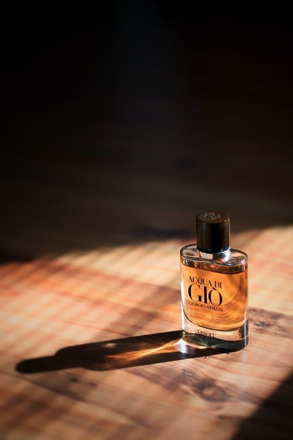
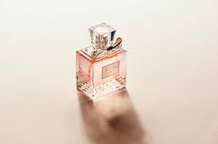

Perfume is a fragrant blend of essential oils, aroma compounds, and solvents, used to enhance scent, evoke emotion, and express personal style across cultures.

Perfume is a fragrant blend of essential oils, aroma compounds, and solvents, used to enhance scent, evoke emotion, and express personal style across cultures.

Perfume is a fragrant blend of essential oils, aroma compounds, and solvents, used to enhance scent, evoke emotion, and express personal style across cultures.
About Us
Perfume is a captivating blend of fragrant oils, aroma compounds, and solvents designed to evoke emotion, enhance personal identity, and create lasting impressions. Derived from the Latin word per fumum, meaning “through smoke,” the art of perfumery dates back thousands of years to ancient civilizations such as Mesopotamia, Egypt, and the Indus Valley. These cultures used natural ingredients like flowers, herbs, and spices to craft aromatic oils for rituals, beauty, and healing. Modern perfumes are composed of three layers: the top note, which is the initial scent that fades quickly; the middle note, which forms the heart of the fragrance; and the base note, which lingers the longest and gives depth. Ingredients can be natural—like rose, jasmine, or sandalwood—or synthetic, allowing perfumers to create scents that don’t exist in nature. Fixatives such as ambergris or musk are often added to stabilize the fragrance and extend its longevity. The process of making perfume involves extracting essential oils through methods like steam distillation, solvent extraction, or enfleurage. These oils are then blended with alcohol and water to achieve the desired concentration and scent profile. Fine perfumes may contain over 100 ingredients, each carefully balanced to produce a harmonious experience. Beyond its sensory appeal, perfume plays a powerful role in self-expression and memory. A single whiff can evoke nostalgia, boost confidence, or signal sophistication. Iconic brands like Chanel, Dior, and Gucci have turned fragrance into a form of wearable art, while niche perfumers continue to push boundaries with bold, unconventional blends. Whether worn daily or reserved for special occasions, perfume remains a timeless accessory—an invisible signature that speaks volumes without saying a word.